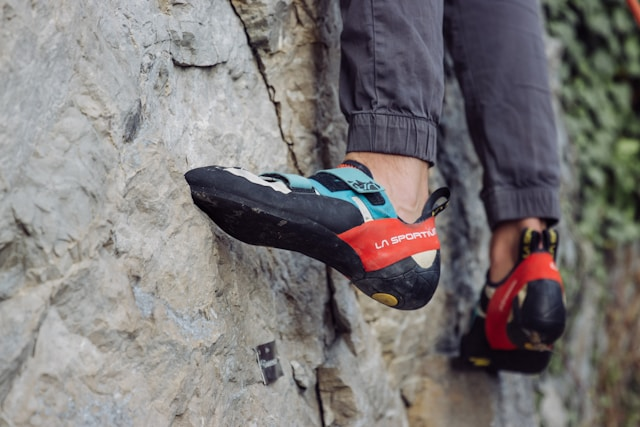
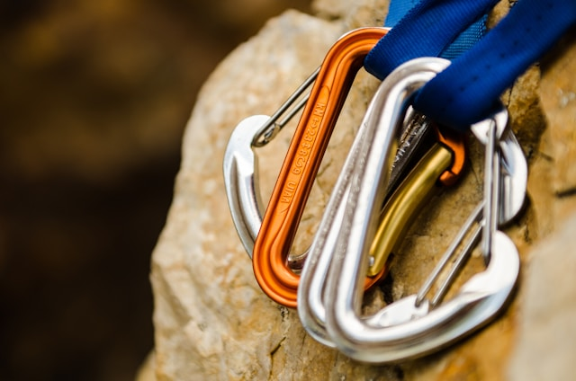
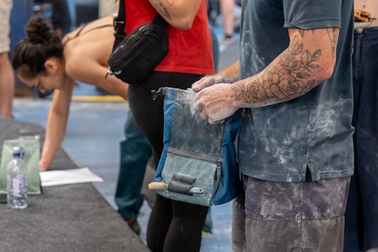

Utrustning för klättring
För att klättra säkert och effektivt behövs rätt utrustning. Vad du behöver beror på vilken typ av klättring du ägnar dig åt, men här är de vanligaste sakerna.
Klätterskor
Klätterskor är speciellt designade för att ge bra grepp på små fotsteg. De sitter oftast tight för att ge bättre kontroll och precision.
Sele
En sele används för att koppla dig till repet. Den sitter runt midjan och benen och är en viktig del av säkerheten vid repklättring.
Rep
Klätterrep är dynamiska, vilket betyder att de kan töjas och ta upp kraften vid ett fall. Det gör klättringen mycket säkrare.
Karbiner och quickdraws
Karbiner används för att koppla ihop olika delar av utrustningen. Quickdraws används inom sportklättring för att fästa repet i väggen.
Hjälm
En hjälm skyddar ditt huvud mot fallande stenar eller om du slår i väggen. Den används främst vid utomhusklättring.
Krita (magnesium)
Krita används för att hålla händerna torra och förbättra greppet. Det är en av de vanligaste sakerna du ser i en klätterhall.
Crashpad
En crashpad är en tjock madrass som används vid bouldering för att dämpa fall.
Kläder
Bekväma och rörliga kläder är viktiga. Du behöver kunna sträcka dig och röra dig fritt.
Tips för nybörjare
Du behöver inte köpa allt direkt. Många klätterhallar hyr ut skor och sele. Börja enkelt och skaffa mer utrustning efter hand.


